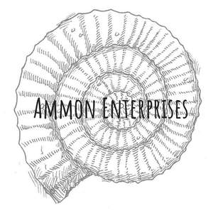

Trade Mark Journal No.2025/018 2 May 2025
UK00004186955 10 April 2025 (6,14,20,21,35,40)

- Class 6
- Urns made of metal; cremation jewellery made of stainless steel or silver; metal keepsakes and charms for ashes; metal keyrings; stainless steel garden memorials and plaques; memorial products made of common metals.
- Class 14
- Jewellery; memorial jewellery; cremation jewellery; rings, necklaces, bracelets and pendants designed to hold or incorporate ashes; commemorative jewellery made of precious metals, resin or glass.
- Class 20
- Urns for human or pet ashes (non-metal); biodegradable urns; wooden cremation urns; scatter tubes for ashes; keepsake boxes and memorial containers made from wood, bamboo or biodegradable materials.
- Class 21
- Glass urns; ceramic urns; hand-blown glass memorials; keepsake containers made of glass or ceramic; cremation products made of pottery, porcelain or fused glass.
- Class 35
- Retail services connected with the sale of memorial products, urns, cremation jewellery, keepsakes, funeral supplies, pet memorial products and related accessories; online retail services, mail order services and e-commerce services relating to memorial and cremation items.
- Class 40
- Custom manufacture of memorial products and ceremony sets; assembly and preparation of personalised scattering or water ceremony sets; treatment of cremation ashes in jewellery, glass, ceramic or resin; infusion of ashes into decorative or commemorative objects; engraving services; bespoke memorial design services.
Ammon Enterprises Limited trading as Scattering Ashes